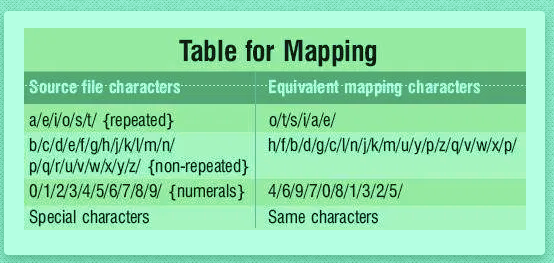

Security, the term itself defines its importance when this word strikes in our mind. Security and Privacy are the two such things which are being valued beyond the level in any industry or sector. This is always been a serious concern especially for Electronic communication and e-Business. It is quite surprising to know that about 2.5 quintillion bytes of data created rip-roaringly each day on web. And it is also estimated that by 2025, about 463 exabytes of data will be created each day globally, i.e, 212,765,957 DVDs per day. Therefore there is no doubt that the Network security measures are very much required to protect data during its transmission. Industries try all the possible ways to accomplish the security in their business. Hackers always stay active to breach the secure barrier and steal the data to make fraudulent acts. Despite these criticisms, there were solutions for securing the data. And one of them is Imbricate Cryptography.
But Before diving into the core subject, we should be familiar with what is cryptography.
Cryptography is a process of encoding the actual data into unreadable format to achieve security. Basically Cryptography involves two processes namely Encoding/Encryption and Decoding/Decryption the data.
There are basically two types of Cryptography:
Inorder to communicate more securely, the sender and receiver use keys during encryption and decryption. If a sender and receiver use different keys or multiple keys then it is called as Asymmentric cryptography or Public key encryption. Whereas if a sender and receiver use single or same key, then it is called as Symmetric cryptography or secret key encryption.
Imbricate Cryptography is a new technique of encrypting the data on the channel by using layered approach. That means it involves 3 layers of encryption and decryption which perplexes the cracker. This is a Symmetric type of cryptography in which the key is implanted in the message. Therefore the message cannot be recovered without placing the correct key at the end point.
Before diving into it, it is suggested that you should have the basic knowledge of:
The process involves three phases, each of these have their own importance.
Layer-1:This layer is called Mapping Layer. Here the characters get jumbled with other characters present in the same set. In general, we have two types of sets here: repeated characters set and non-repeated characters set. English words usually consist of alphabets in which the probability of few characters like a,e,i,o,s,t occur maximum times. These characters are called repeated characters. And the remaining alphabets comes under non-repeated characters which occur occassionally. Likewise all the characters, numbers are jumbled and mapped in their own set, which eventually completes the first layer.
One thing to note here is that the password or key doesnot include in this layer.
This layer is called as the core-encoding layer because this layer makes use of bitwise logics and ASCII format for encoding purpose. The characters which are formed from layer-1, are then transmuted to ASCII format. Now the first character of the message is XORed with negated ASCII character of the first character of the password. Same process is done for rest of the message.
The formula for this encoding is: newChar = (oldChar) XOR (~key[i]).
In this layer the ASCII characters formed in Layer-2 are converted into equivalent Binary format and the output is stored as a bitmap file. Hence this layer is called as "Bitmap-conversion layer".
Let us practically understand the above layers with a simple example.
Suppose we have a message X ={hello};
Key K={hai};Consider the following table for mapping the characters:
From the table the characters are jumbled as follows:
X1={ltjji};X2 = X1 ^(~K);
X2 = {l^~h, t^~a, j^~i, j^~h, i^~a};
The binary values for above set is X2 = {11111011, 11101010, 11111100, 11111101, 11101111}.
Now finally these are transmuted into character format in the form of Bitmap file.
Note: Here XOR operation is denoted by ^ symbol. 1s compliment operation is denoted by '~' symbol.
Moreover, the important thing to note here is that during encryption and decryption processes, the layer 1 is not dependent on the user Key, however the remaining two layers totally dependent on the Key.
The process of decryption is exactly the reverse of the above encryption process.
In this layer the bits of bitmap file are regrouped and restructured to form ASCII characters. Because of this, it is called character-restructuring layer.
This layer is known as core-decoding layer. Here the above ASCII characters are decoded using the same XOR logic used in encryption. Remember the message can be retrieved only if you use the same key as used in encryption.
This layer is known as re-mapping layer. Here the resultant characters are replaced with equivalent character present in column 1 of the Table. And finally the Original message is retrieved.